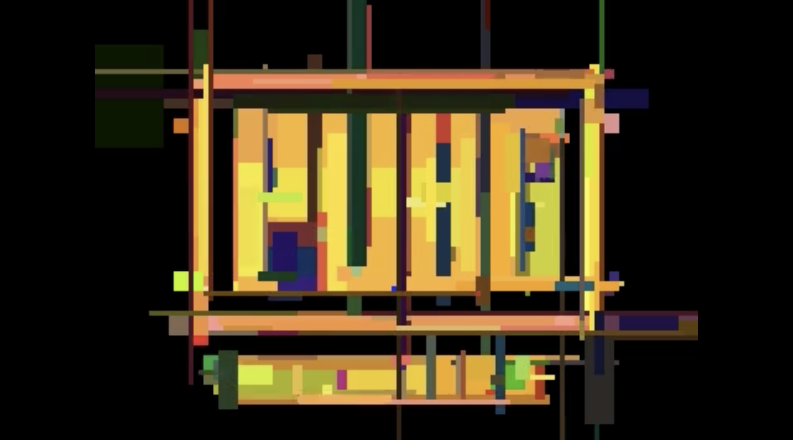

Box Filter - Evolution Algorithm
The thing I like about JAVA, is it's cross-platform availibility. I can wirte the program in one platform, without worrying the difference when running in other OS. As long as the user has Java installed, the program will run. Especially when it comes to GUI, the low level code controlling input and output system is always different across OS.
Java Swing is currently my second favoirite GUI library, after HTML canvas. It is easy to use and allows me to create windows, with components like buttons, text fields, and labels, without needing to install additional libraries (I hate installing libraries, but I might try them in the future).
When I was trying things out in Java Swing, I found out that it is possible to create window with images with pixel manipulation methods. This is not the first time I have tried pixel manipulation, I have done it in HTML canvas before, which gives me an excellent result, I even used the result as my profile picture for a while (I am getting a little bit off topic). Anyways, I would like to make another piece of art, using Java Swing.
The idea of Evolution Algorithm comes from all of the videos I watched on Youtube about evolution simulation. Specificly, this one by Spu7Nix stands out and directly sparked me to start my project. After watching the video, I found that the animation showing each generation of the evolution is very satisfying. Each generation adding a new piece of object to the scene, slowly approaching the input image, while the final result gradually emerges. I like how the final result is not a perfect match of the input image, but with a little bit of randomness. Even with randomness, it still keeps the main features of the input image, just like how a filter works.
Here is the idea of the algorithm:
Even with the algorithm in mind, the implementation is not as simple as I thought.
With multiple "failed" attempts using the Java GUI library in the past, I have gained some experience on how it works. I am starting to understand how people extends the JPanel/JFrame class to create a custom panel. This allows me to add buttons directly in the constructor of the class, as well as ActionListeners to handle the button clicks.
I made 1 extension of JFrame, which is the main window of the program, and 1 extension of JPanel, which is the panel that will be filled with images in the ImageScrollable class. So that I can see all the images by scrolling.
Then to the core part of the program, the Core classes. There are three files: Core.java, RandomShape.java, and GenImage.java.

To slightly enhance the user experience, I added the ability to choose input image from the Java Swing file chooser. Also, I added the feature to output the generation animation as a video file, so that the user can enjoy the process afterwards. Lastly, I added a timer to show the time taken for each generation, this allows me and the user to estimate the time needed for the whole process, and adjust the configuration accordingly.
I have uploaded the source code to my GitHub repository, you can find it here. The code is not well documented, and I will leave it as it is for now. It is a personal project to learn Java programming, and I am not planning to make it a production-ready application. However, I am open to suggestions and improvements, so feel free to reach out if you have any ideas or feedback.